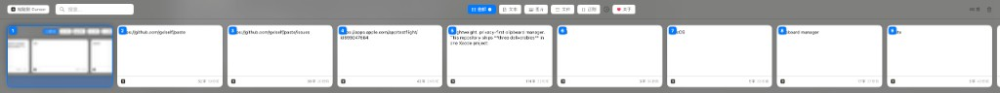
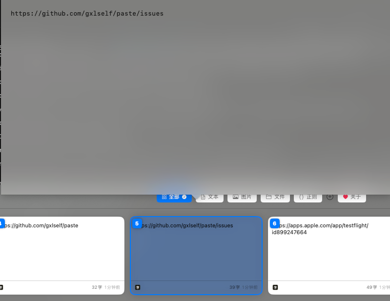
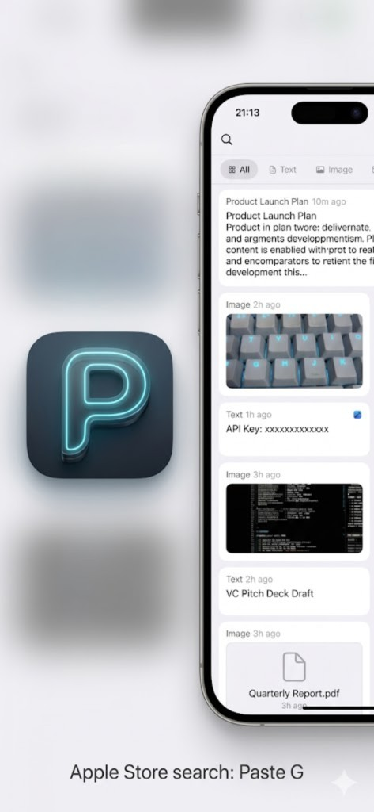
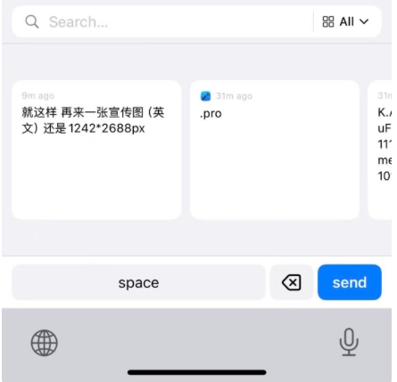
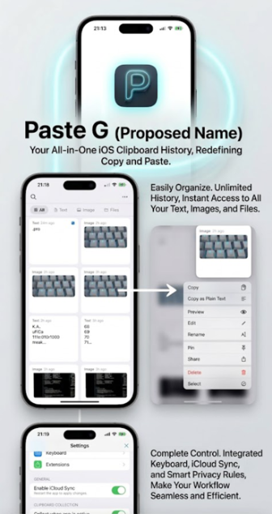

Paste (macOS)
菜单栏应用：剪贴板历史、全局快捷键、悬浮面板、Paste Stack、Pinboards，可选 iCloud 同步。
轻量、隐私优先。Mac 菜单栏历史记录，iPhone 浏览与置顶，自定义键盘内一键粘贴 — 可选 iCloud 跨设备同步。
若 Paste 对你有帮助，欢迎在 GitHub 点个 Star。TestFlight 满员或无法加入时，可邮件 gxlself@gmail.com。
同一个 Xcode 工程产出：Mac 菜单栏应用、iOS 伴侣应用与自定义键盘扩展。
菜单栏应用：剪贴板历史、全局快捷键、悬浮面板、Paste Stack、Pinboards，可选 iCloud 同步。
在 iPhone/iPad 上浏览同一套历史：Pinboards、筛选、分类、多选、扫描与快速新建文本。
自定义键盘：在邮件、备忘录等应用中直接选取已保存片段插入，无需切出。需开启「完全访问」。
macOS 主面板与 iOS 应用（Paste G）及自定义键盘。
macOS


iOS



留存 · 搜索 · 整理 · Mac / iPhone / 键盘。功能一览 →
Mac 上完整历史：文本、RTF、图片、路径。去重、保留策略、时间线、排除应用。需要的内容随时能找到。
实时搜索、类型标签、正则预设、自定义分类。几秒内找到早上复制的那段内容。
Pinboards、Paste Stack、置顶、纯文本粘贴选项。可选 iCloud 在 Mac 与 iOS 间同步。
git clone https://github.com/gxlself/paste.git && cd paste && open Paste.xcodeprojgroup.gxlself.paste-tool 见 SETUP.md。若 Paste 为你节省了时间，欢迎打赏。扫码关注微信公众号获取更新。